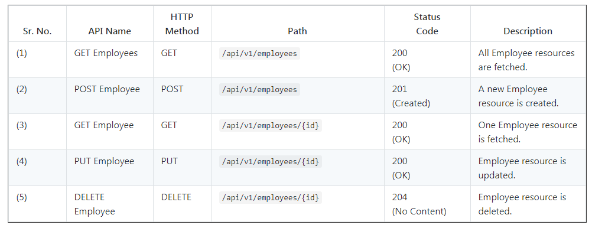
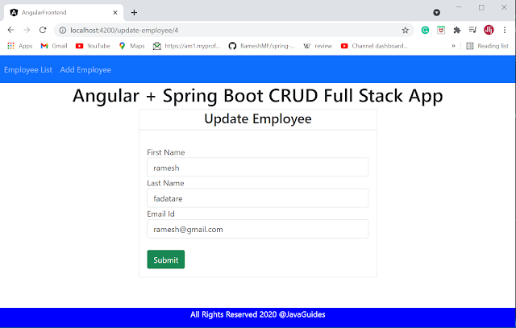

In this full-stack tutorial, we will learn how to develop a CRUD (Create, Read, Update, Delete) web
application using Angular 12 as a front-end and Spring boot as a backend.
Angular is a platform and framework for building single-page client applications using HTML and
TypeScript. Angular is written in TypeScript.
Spring Boot is a very popular Java framework for building Restful Webservices and Microservices.
1. Develop Spring Boot Backend Application
Following are five REST APIs (Controller handler methods), we will develop for Employee resource.

Step1: Create a Spring Boot Application
There are many ways to create a Spring Boot application. You can refer to the below articles to
create a Spring Boot application.
>> Create Spring Boot Project With Spring Initializer
>> Create Spring Boot Project in Spring Tool Suite [STS]
Step 2: Maven dependencies
< dependency>
< groupId >org.springframework.boot< /groupId >
< artifactId>spring-boot-starter-data-jpa< /artifactId>
< /dependency>
< dependency>
< groupId>org.springframework.boot< /groupId>
< artifactId>spring-boot-starter-web< /artifactId>
< /dependency>
< dependency>
< groupId>org.springframework.boot< /groupId>
< artifactId>spring-boot-devtools< /artifactId>
< scope>runtime< /scope>
< optional>true< /optional>
< /dependency>
< dependency>
< groupId>com.h2database< /groupId>
< artifactId>h2< /artifactId>
< scope>runtime< /scope>
< /dependency>
3. Configuring Database (H2 or MySQL)
H2 Database Configuration
In this project, we will use the H2 database to quickly set up and run a spring boot project without
installing databases.
Note that we have added the below dependency in the pom.xml file:
< dependency>
< groupId>com.h2database< /groupId>
< artifactId>h2< /artifactId>
< scope>runtime< /scope>
< /dependency>
If you use the H2 database then we no need to configure the database-related properties in the
application.properties file.
spring.datasource.url = jdbc:mysql://localhost:3306/EMS?useSSL=false
spring.datasource.username = root
spring.datasource.password = root
## Hibernate Properties
# The SQL dialect makes Hibernate generate better SQL for the chosen database
spring.jpa.properties.hibernate.dialect = org.hibernate.dialect.MySQL5InnoDBDialect
# Hibernate ddl auto (create, create-drop, validate, update)
spring.jpa.hibernate.ddl-auto = update
server.servlet.context-path=/springboot-crud-rest
Make sure that you will change the above database configuration such as JDBC URL, username, and
password as per your environment.
Step 3: You need to create a database in MySQL server with the following command:
Hibernate will automatically create database tables so you only need to manually create the database
and configure an application.properties file.
4. Create JPA Entity - Employee.java
Let's create a new package called model inside net.javaguides.springboot package and
then create the Employee class inside the model package with the following contents -
package net.javaguides.springboot.model;
import jakarta.persistence.*;
@Entity
@Table(name = "employees")
public class Employee {
@Id
@GeneratedValue(strategy = GenerationType.IDENTITY)
private long id;
@Column(name = "first_name")
private String firstName;
@Column(name = "last_name")
private String lastName;
@Column(name = "email_id")
private String emailId;
public Employee() {
}
public Employee(String firstName, String lastName, String emailId) {
super();
this.firstName = firstName;
this.lastName = lastName;
this.emailId = emailId;
}
public long getId() {
return id;
}
public void setId(long id) {
this.id = id;
}
public String getFirstName() {
return firstName;
}
public void setFirstName(String firstName) {
this.firstName = firstName;
}
public String getLastName() {
return lastName;
}
public void setLastName(String lastName) {
this.lastName = lastName;
}
public String getEmailId() {
return emailId;
}
public void setEmailId(String emailId) {
this.emailId = emailId;
}
}
5. Create a Spring Data Repository - EmployeeRepository.java
Create a new package called repository inside
net.javaguides.springboot package and then create the following interface inside the
repository package -
package net.javaguides.springboot.exception;
import org.springframework.http.HttpStatus;
import org.springframework.web.bind.annotation.ResponseStatus;
@ResponseStatus(value = HttpStatus.NOT_FOUND)
public class ResourceNotFoundException extends RuntimeException{
private static final long serialVersionUID = 1L;
public ResourceNotFoundException(String message) {
super(message);
}
}
7. Create Spring Rest Controller - EmployeeController.java
Let's create a controller package and within this, create an class and add the following code to it:
package net.javaguides.springboot.controller;
import java.util.HashMap;
import java.util.List;
import java.util.Map;
import org.springframework.beans.factory.annotation.Autowired;
import org.springframework.http.ResponseEntity;
import org.springframework.web.bind.annotation.CrossOrigin;
import org.springframework.web.bind.annotation.DeleteMapping;
import org.springframework.web.bind.annotation.GetMapping;
import org.springframework.web.bind.annotation.PathVariable;
import org.springframework.web.bind.annotation.PostMapping;
import org.springframework.web.bind.annotation.PutMapping;
import org.springframework.web.bind.annotation.RequestBody;
import org.springframework.web.bind.annotation.RequestMapping;
import org.springframework.web.bind.annotation.RestController;
import net.javaguides.springboot.exception.ResourceNotFoundException;
import net.javaguides.springboot.model.Employee;
import net.javaguides.springboot.repository.EmployeeRepository;
@CrossOrigin(origins = "http://localhost:4200")
@RestController
@RequestMapping("/api/v1/")
public class EmployeeController {
@Autowired
private EmployeeRepository employeeRepository;
// get all employees
@GetMapping("/employees")
public List< Employee> getAllEmployees(){
return employeeRepository.findAll();
}
// create employee rest api
@PostMapping("/employees")
public Employee createEmployee(@RequestBody Employee employee) {
return employeeRepository.save(employee);
}
// get employee by id rest api
@GetMapping("/employees/{id}")
public ResponseEntity< Employee> getEmployeeById(@PathVariable Long id) {
Employee employee = employeeRepository.findById(id)
.orElseThrow(() -> new ResourceNotFoundException("Employee not exist with id :" + id));
return ResponseEntity.ok(employee);
}
// update employee rest api
@PutMapping("/employees/{id}")
public ResponseEntity< Employee> updateEmployee(@PathVariable Long id, @RequestBody Employee employeeDetails){
Employee employee = employeeRepository.findById(id)
.orElseThrow(() -> new ResourceNotFoundException("Employee not exist with id :" + id));
employee.setFirstName(employeeDetails.getFirstName());
employee.setLastName(employeeDetails.getLastName());
employee.setEmailId(employeeDetails.getEmailId());
Employee updatedEmployee = employeeRepository.save(employee);
return ResponseEntity.ok(updatedEmployee);
}
// delete employee rest api
@DeleteMapping("/employees/{id}")
public ResponseEntity< Map< String, Boolean>> deleteEmployee(@PathVariable Long id){
Employee employee = employeeRepository.findById(id)
.orElseThrow(() -> new ResourceNotFoundException("Employee not exist with id :" + id));
employeeRepository.delete(employee);
Map< String, Boolean> response = new HashMap<>();
response.put("deleted", Boolean.TRUE);
return ResponseEntity.ok(response);
}
}
Enable CORS on the Server
To enable CORS on the server, add a @CrossOrigin annotation to the EmployeeController:
@CrossOrigin(origins = "http://localhost:4200")
@RestController
@RequestMapping("/api/v1/")
public class EmployeeController {
// ..
}
8. Running Application
This spring boot application has an entry point Java class called
SpringbootBackendApplication.java with the public static void
main(String[] args) method, which you can run to start the application.
package net.javaguides.springboot;
import org.springframework.boot.SpringApplication;
import org.springframework.boot.autoconfigure.SpringBootApplication;
@SpringBootApplication
public class SpringbootBackendApplication {
public static void main(String[] args) {
SpringApplication.run(SpringbootBackendApplication.class, args);
}
}Or you can start the spring boot application via the command line using mvn
spring-boot:run command.
9. Testing REST APIs
Use below Rest endpoints to test CRUD Rest APIs and in Angular application.
Get All Employees:
HTTP Method: GET
http://localhost:8080/api/v1/employees
Get Employee By Id:
HTTP Method GET
http://localhost:8080/api/v1/employees/{employeeId}
Create Employee:
HTTP Method - POST
http://localhost:8080/api/v1/employees
Update Employee
HTTP Method - POST
http://localhost:8080/api/v1/employees/{employeeId}
Delete Employee By Id:
HTTP Method - DELETE
http://localhost:8080/api/v1/employees/{employeeId}
This completes the development of Spring boot CRUD Rest APIs.
2. Develop Angular Frontend Application
Let's develop a step-by-step CRUD (Create, Read, Update, Delete) web application using Angular 12
which consumes CRUD rest APIs.
I assume that you have installed Node.js. Now, we need to check the Node.js and NPM
versions. Open the terminal or Node command line then type these commands.
G:\angular\Angular 12>node -v
v12.18.2
G:\angular\Angular 12>npm -v
6.14.5
1. Install the latest version of Angular CLI
To install or update Angular CLI, type this command in the Terminal or Node Command-Line.
npm install -g @angular/cli
Now, let's check the latest version of Angular CLI:
G:\angular\Angular 12>ng --version
_ _ ____ _ ___
/ \ _ __ __ _ _ _| | __ _ _ __ / ___| | |_ _|
/ △ \ | '_ \ / _` | | | | |/ _` | '__| | | | | | |
/ ___ \| | | | (_| | |_| | | (_| | | | |___| |___ | |
/_/ \_\_| |_|\__, |\__,_|_|\__,_|_| \____|_____|___|
|___/
Angular CLI: 12.1.3
Node: 12.18.2
Package Manager: npm 6.14.5
OS: win32 x64
Angular:
...
Package Version
------------------------------------------------------
@angular-devkit/architect 0.1201.3 (cli-only)
@angular-devkit/core 12.1.3 (cli-only)
@angular-devkit/schematics 12.1.3 (cli-only)
@schematics/angular 12.1.3 (cli-only)
2. Create Angular App using Angular CLI
The Angular CLI is a command-line interface tool that you use to initialize, develop,
scaffold, and maintain Angular applications.
If you are new to Angular CLI then check out official documentation at
https://cli.angular.io.
Let's use the below command to generate an Angular Client application. We name this project as
"angular-frontend".
3. Identify Components, Services, and Modules
Let's list out what are components, services, and modules we are going to create in
this application. We will use Angular CLI to generate components, services because Angular CLI
follows best practices and saves much time.
Components
- create-employee
- update-employee
- employee-list
- employee-details
Services
- employee.service.ts - Service for HTTP Client methods
Modules
We use below in-built modules provided by Angular:
- FormsModule
- HttpClientModule
- AppRoutingModule
Employee Class (Typescript class)
- employee.ts: class Employee (id, firstName, lastName, emailId)
In the next step, we will generate these components, classes, and services using Angular CLI.
4. Create Angular Components and Service Classes using Angular CLI
Let's auto-generate the service and components using Angular CLI. Change your project
directory to angular-frontend\src\app and run the following commands:
– ng g c create-employee
– ng g c update-employee
– ng g c employee-details
– ng g c employee-list
- ng g s employee
5. Integrate JQuery and Bootstrap with Angular
Use NPM to download Bootstrap & JQuery. Bootstrap and jQuery will be installed into the node_modules
folder.
npm install bootstrap jquery --save
Configure installed Bootstrap & JQuery in an angular.json
file:
...
"styles": [
"src/styles.css",
"node_modules/bootstrap/dist/css/bootstrap.min.css"
],
"scripts": [
"node_modules/jquery/dist/jquery.min.js",
"node_modules/bootstrap/dist/js/bootstrap.min.js"
]
...
If bootstrap won't work then try to import bootstrap CSS in style.css like:
6. Create an Employee Model (TypeScript)
Path - src/app/employee.ts
Before defining the EmployeeListComponent, let’s define an Employee class for working
with employees. create a new file employee.ts inside src/app folder and add the following code to it -
export class Employee {
id: number;
firstName: string;
lastName: string;
emailId: string;
}
7. Create Employee Service - REST Client
Path - src/app/employee.service.ts
The EmployeeService will be used to get the data from the backend by calling spring boot APIs. Update
the employee.service.ts file inside src/app
directory with the following code to it -
import { Injectable } from '@angular/core';
import { HttpClient } from '@angular/common/http'
import { Observable } from 'rxjs';
import { Employee } from './employee';
@Injectable({
providedIn: 'root'
})
export class EmployeeService {
private baseURL = "http://localhost:8080/api/v1/employees";
constructor(private httpClient: HttpClient) { }
getEmployeesList(): Observable< Employee[]>{
return this.httpClient.get< Employee[]>(`${this.baseURL}`);
}
createEmployee(employee: Employee): Observable< Object>{
return this.httpClient.post(`${this.baseURL}`, employee);
}
getEmployeeById(id: number): Observable< Employee>{
return this.httpClient.get< Employee>(`${this.baseURL}/${id}`);
}
updateEmployee(id: number, employee: Employee): Observable< Object>{
return this.httpClient.put(`${this.baseURL}/${id}`, employee);
}
deleteEmployee(id: number): Observable< Object>{
return this.httpClient.delete(`${this.baseURL}/${id}`);
}
}
In the next step, we will start creating Angular components.
8. Creating Employee List Component and Template
Path - src/app/employee-list/employee-list.component.ts
Let's create the EmployeeListComponent component which will be used to display a list of
employees, create a new employee, and delete an employee.
Update/remove the content of employee-list.component.ts inside src/app directory and add the following code to it -
import { Component, OnInit } from '@angular/core';
import { Employee } from '../employee'
import { EmployeeService } from '../employee.service'
import { Router } from '@angular/router';
@Component({
selector: 'app-employee-list',
templateUrl: './employee-list.component.html',
styleUrls: ['./employee-list.component.css']
})
export class EmployeeListComponent implements OnInit {
employees: Employee[];
constructor(private employeeService: EmployeeService,
private router: Router) { }
ngOnInit(): void {
this.getEmployees();
}
private getEmployees(){
this.employeeService.getEmployeesList().subscribe(data => {
this.employees = data;
});
}
employeeDetails(id: number){
this.router.navigate(['employee-details', id]);
}
updateEmployee(id: number){
this.router.navigate(['update-employee', id]);
}
deleteEmployee(id: number){
this.employeeService.deleteEmployee(id).subscribe( data => {
console.log(data);
this.getEmployees();
})
}
}
9. Create Add Employee Component and Template
Path - src/app/create-employee/create-employee.component.ts
CreateEmployeeComponent is used to create and handle a new employee form data. Add the
following code to it -
import { Component, OnInit } from '@angular/core';
import { Employee } from '../employee';
import { EmployeeService } from '../employee.service';
import { Router } from '@angular/router';
@Component({
selector: 'app-create-employee',
templateUrl: './create-employee.component.html',
styleUrls: ['./create-employee.component.css']
})
export class CreateEmployeeComponent implements OnInit {
employee: Employee = new Employee();
constructor(private employeeService: EmployeeService,
private router: Router) { }
ngOnInit(): void {
}
saveEmployee(){
this.employeeService.createEmployee(this.employee).subscribe( data =>{
console.log(data);
this.goToEmployeeList();
},
error => console.log(error));
}
goToEmployeeList(){
this.router.navigate(['/employees']);
}
onSubmit(){
console.log(this.employee);
this.saveEmployee();
}
}
Path - src/app/create-employee/create-employee.component.html
The create-employee.component.html shows the add employee HTML form. Add
the following code to it -
< div class="row">
< div class="card col-md-6 offset-md-3 offset-md-3">
< div class="row">
< h3 class="text-center"> Create Employee
< hr />
< div class="card-body">
< form (ngSubmit)="onSubmit()">
< div class="form-group">
< label> First Name
< input type="text" class="form-control" id="firstName" [(ngModel)]="employee.firstName"
name="firstName">
< /div>
< div class="form-group">
< label> Last Name
< input type="text" class="form-control" id="lastName" [(ngModel)]="employee.lastName"
name="lastName">
< /div>
< div class="form-group">
< label> Email Id
< input type="text" class="form-control" id="emailId" [(ngModel)]="employee.emailId"
name="emailId">
< /div>
< br />
< button class="btn btn-success" type="submit">Submit
< /form>
< /div>
< /div>
< /div>
< /div>
10. Create Update Employee Component and Template
Path - src/app/update-employee/update-employee.component.ts
In this UpdateEmployeeComponent , we first get the employee object using
REST API and populate it in HTML form via data binding. Users can edit the employee form data and
submit the form.
Let's add the following code to UpdateEmployeeComponent -
import { Component, OnInit } from '@angular/core';
import { EmployeeService } from '../employee.service';
import { Employee } from '../employee';
import { ActivatedRoute, Router } from '@angular/router';
@Component({
selector: 'app-update-employee',
templateUrl: './update-employee.component.html',
styleUrls: ['./update-employee.component.css']
})
export class UpdateEmployeeComponent implements OnInit {
id: number;
employee: Employee = new Employee();
constructor(private employeeService: EmployeeService,
private route: ActivatedRoute,
private router: Router) { }
ngOnInit(): void {
this.id = this.route.snapshot.params['id'];
this.employeeService.getEmployeeById(this.id).subscribe(data => {
this.employee = data;
}, error => console.log(error));
}
onSubmit(){
this.employeeService.updateEmployee(this.id, this.employee).subscribe( data =>{
this.goToEmployeeList();
}
, error => console.log(error));
}
goToEmployeeList(){
this.router.navigate(['/employees']);
}
}
Path - src/app/update-employee/update-employee.component.html
The update-employee.component.html shows the updated employee HTML form.
Add the following code to this file -
< div class="row">
< div class="card col-md-6 offset-md-3 offset-md-3">
< div class="row">
< h3 class="text-center"> Update Employee
< hr />
< div class="card-body">
< form (ngSubmit)="onSubmit()">
< div class="form-group">
< label> First Name
< input type="text" class="form-control" id="firstName" [(ngModel)]="employee.firstName"
name="firstName">
< /div>
< div class="form-group">
< label> Last Name
< input type="text" class="form-control" id="lastName" [(ngModel)]="employee.lastName"
name="lastName">
< /div>
< div class="form-group">
< label> Email Id
< input type="text" class="form-control" id="emailId" [(ngModel)]="employee.emailId"
name="emailId">
< /div>
< br />
< button class="btn btn-success" type="submit">Submit
< /form>
< /div>
< /div>
< /div>
< /div>
11. Create View Employee Details Component and Template
Path - src/app/employee-details/employee-details.component.ts
The EmployeeDetailsComponent component is used to display a particular
employee detail. Add the following code to it -
import { Component, OnInit } from '@angular/core';
import { Employee } from '../employee';
import { ActivatedRoute } from '@angular/router';
import { EmployeeService } from '../employee.service';
@Component({
selector: 'app-employee-details',
templateUrl: './employee-details.component.html',
styleUrls: ['./employee-details.component.css']
})
export class EmployeeDetailsComponent implements OnInit {
id: number
employee: Employee
constructor(private route: ActivatedRoute, private employeService: EmployeeService) { }
ngOnInit(): void {
this.id = this.route.snapshot.params['id'];
this.employee = new Employee();
this.employeService.getEmployeeById(this.id).subscribe( data => {
this.employee = data;
});
}
}
Path - src/app/employee-details/employee-details.component.html
The employee-details.component.html displays a particular employee detail.
Add the following code to it -
< h3> View Employee Details
< div>
< div>
< label> First Name: {{employee.firstName}}
< /div>
< div>
< label> Last Name: {{employee.lastName}}
< /div>
< div>
< label> Email Id: {{employee.emailId}}
< /div>
< /div>
12. package.json - Configure Dependencies
Path: /package.json
The package.json file contains project configuration information including
package dependencies that get installed when you run npm install. Full
documentation is available on the npm docs website.
Note that angular version 12.1.0 is in the dependencies section in the below file.
{
"name": "angular-frontend",
"version": "0.0.0",
"scripts": {
"ng": "ng",
"start": "ng serve",
"build": "ng build",
"watch": "ng build --watch --configuration development",
"test": "ng test"
},
"private": true,
"dependencies": {
"@angular/animations": "~12.1.0-",
"@angular/common": "~12.1.0-",
"@angular/compiler": "~12.1.0-",
"@angular/core": "~12.1.0-",
"@angular/forms": "~12.1.0-",
"@angular/platform-browser": "~12.1.0-",
"@angular/platform-browser-dynamic": "~12.1.0-",
"@angular/router": "~12.1.0-",
"bootstrap": "^5.0.2",
"jquery": "^3.6.0",
"rxjs": "~6.6.0",
"tslib": "^2.2.0",
"zone.js": "~0.11.4"
},
"devDependencies": {
"@angular-devkit/build-angular": "~12.1.3",
"@angular/cli": "~12.1.3",
"@angular/compiler-cli": "~12.1.0-",
"@types/jasmine": "~3.8.0",
"@types/node": "^12.11.1",
"jasmine-core": "~3.8.0",
"karma": "~6.3.0",
"karma-chrome-launcher": "~3.1.0",
"karma-coverage": "~2.0.3",
"karma-jasmine": "~4.0.0",
"karma-jasmine-html-reporter": "~1.7.0",
"typescript": "~4.3.2"
}
}
13. App Routing Module
Path: /src/app/app.routing.module.ts
Routing for the Angular app is configured as an array of Routes, each component is mapped to a
path so the Angular Router knows which component to display based on the URL in the browser address
bar.
import { NgModule } from '@angular/core';
import { Routes, RouterModule } from '@angular/router';
import { EmployeeListComponent } from './employee-list/employee-list.component';
import { CreateEmployeeComponent } from './create-employee/create-employee.component';
import { UpdateEmployeeComponent } from './update-employee/update-employee.component';
import { EmployeeDetailsComponent } from './employee-details/employee-details.component';
const routes: Routes = [
{path: 'employees', component: EmployeeListComponent},
{path: 'create-employee', component: CreateEmployeeComponent},
{path: '', redirectTo: 'employees', pathMatch: 'full'},
{path: 'update-employee/:id', component: UpdateEmployeeComponent},
{path: 'employee-details/:id', component: EmployeeDetailsComponent}
];
@NgModule({
imports: [RouterModule.forRoot(routes)],
exports: [RouterModule]
})
export class AppRoutingModule { }
14. App Component
Path: /src/app/app.component.ts
The app component is the root component of the application, it defines the root tag of the app as
with the selector property of the @Component decorator.
import { Component } from '@angular/core';
@Component({
selector: 'app-root',
templateUrl: './app.component.html',
styleUrls: ['./app.component.css']
})
export class AppComponent {
title = 'Angular + Spring Boot CRUD Full Stack App';
}
15. App Component Template
Path: /src/app/app.component.html
Defines the HTML template associated with the root AppComponent.
< nav class="navbar navbar-expand-sm bg-primary navbar-dark">
< ul class = "navbar-nav">
< li class = "nav-item">
< a routerLink="employees" routerLinkActive="active" class="nav-link" >Employee List
< /li>
< li class = "nav-item">
Add Employee
< /li>
< /ul>
< /nav>
< h1 class="text-center"> {{title}}
< div class = "container">
< router-outlet>
< /div>
< footer class = "footer">
< div class = "container">
< span>All Rights Reserved 2020 @JavaGuides
< /div>
< /footer>
16. App Module
Path: /src/app/app.module.ts
Defines the root module, named AppModule, that tells Angular how to
assemble the application. Initially declares only the AppComponent. As you
add more components to the app, they must be declared here.
import { BrowserModule } from '@angular/platform-browser';
import { NgModule } from '@angular/core';
import { HttpClientModule } from '@angular/common/http'
import { AppRoutingModule } from './app-routing.module';
import { AppComponent } from './app.component';
import { EmployeeListComponent } from './employee-list/employee-list.component';
import { CreateEmployeeComponent } from './create-employee/create-employee.component';
import { FormsModule} from '@angular/forms';
import { UpdateEmployeeComponent } from './update-employee/update-employee.component';
import { EmployeeDetailsComponent } from './employee-details/employee-details.component'
@NgModule({
declarations: [
AppComponent,
EmployeeListComponent,
CreateEmployeeComponent,
UpdateEmployeeComponent,
EmployeeDetailsComponent
],
imports: [
BrowserModule,
AppRoutingModule,
HttpClientModule,
FormsModule
],
providers: [],
bootstrap: [AppComponent]
})
export class AppModule { }
17. Running Angular Client Application
Let's run the above developed Angular App with a command:
By default, the Angular app runs on 4200 port but you can change the default port with the following
command:
3. Demo of Complete Full-stack Application
Make sure that both (Spring boot and Angular) applications are up and running.
Hit http://localhost:4200 link in a browser that will host this
Angular CRUD app.
Below are the screenshots shows the UI of our Employee Management System App.
Employee List Page
Add Employee Page
Update Employee Page

4. Conclusion
In this full-stack tutorial, we have seen how to develop a CRUD (Create, Read, Update, Delete) web
application using Angular 12 as a front-end and Spring boot as a
backend.
The source code of this tutorial is hosted on our GitHub repository at
https://github.com/sourcecodeexamples/angular-springboot-crud-example
.